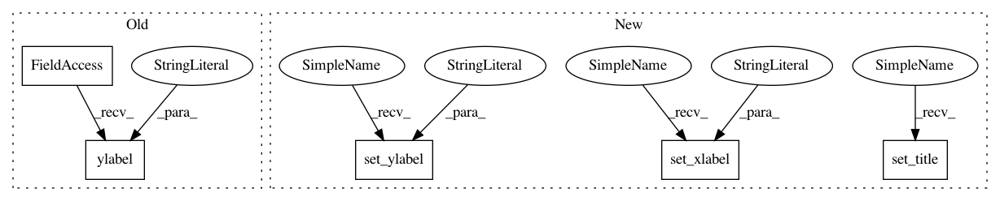

2ddf94e48476ff253260a3364f76ee13a932e252,src/pyscenic/binarization.py,,plot_binarization,#,47
Before Change
plt.plot([threshold]*2, ylim, "r:")
plt.ylim(ylim)
plt.xlabel("AUC")
plt.ylabel("//")
plt.title(regulon_name)
After Change
ylim = ax.get_ylim()
ax.plot([threshold]*2, ylim, "r:")
ax.set_ylim(ylim)
ax.set_xlabel("AUC")
ax.set_ylabel("//")
ax.set_title(regulon_name)
In pattern: SUPERPATTERN
Frequency: 3
Non-data size: 5
Instances
Project Name: aertslab/pySCENIC
Commit Name: 2ddf94e48476ff253260a3364f76ee13a932e252
Time: 2018-06-15
Author: vandesande.bram@gmail.com
File Name: src/pyscenic/binarization.py
Class Name:
Method Name: plot_binarization
Project Name: scikit-optimize/scikit-optimize
Commit Name: 4a8d1ffcf12287d632fb25ef484344d68d987818
Time: 2016-07-20
Author: g.louppe@gmail.com
File Name: skopt/plots.py
Class Name:
Method Name: plot_convergence
Project Name: aertslab/pySCENIC
Commit Name: 2ddf94e48476ff253260a3364f76ee13a932e252
Time: 2018-06-15
Author: vandesande.bram@gmail.com
File Name: src/pyscenic/binarization.py
Class Name:
Method Name: plot_binarization
Project Name: neurodsp-tools/neurodsp
Commit Name: 858b460aeab7d80e6d67da022ccca1cf11efe89a
Time: 2020-06-14
Author: tdonoghue@ucsd.edu
File Name: neurodsp/plts/rhythm.py
Class Name:
Method Name: plot_swm_pattern